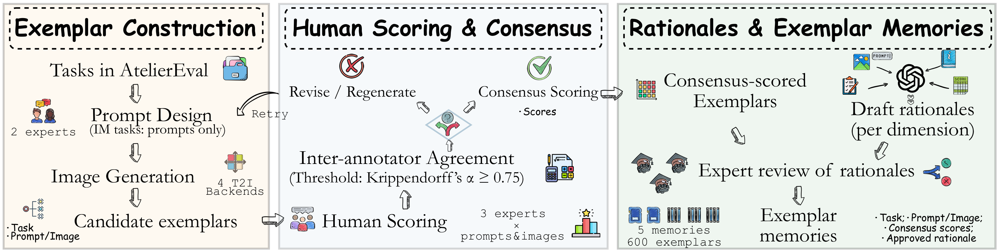
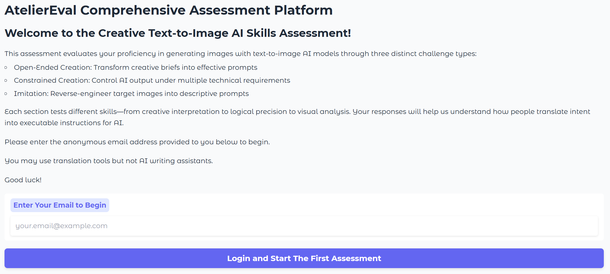
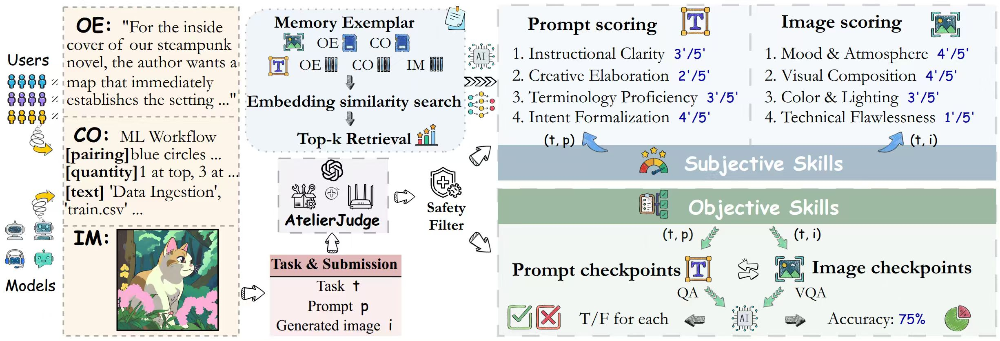
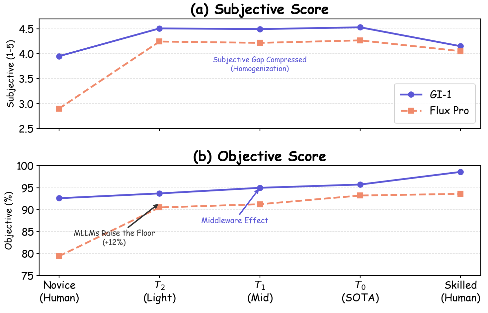
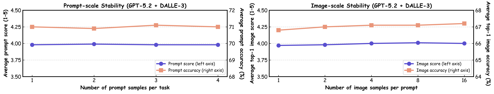

AtelierEval introduces the first systematic benchmark and agentic evaluator to measure prompting proficiency of both humans and MLLMs, revealing that imitation prompting is superior to planning and motivating a shift toward image-augmented prompting.
本文提出了首个系统化基准AtelierEval，用于量化人类和多模态大语言模型在文生图工作流中的提示能力。其核心发现是模仿式提示优于规划式提示，并揭示了先进文生图后端与多模态大语言模型中间件结合时会导致客观性能下降。该工作为提示工程教育、提示优化器开发以及人机协作提供了标准化评估工具。
Deep Note — atelier-eval
Key Takeaways - First unified benchmark to quantify prompting proficiency of humans and MLLMs in text-to-image workflows. - AtelierJudge achieves Spearman correlation of 0.81 with human experts, approaching human agreement of 0.83. - Imitation prompting outperforms planning-based prompting, advocating for image-augmented future prompters. - Advanced T2I backends with MLLM middleware homogenize subjective quality but cause objective performance degradation. - Benchmark includes 360 expert-crafted tasks across three cognitive categories: Open-ended, Constrained, Imitation.
0) Metadata
- Title: AtelierEval: Agentic Evaluation of Humans & LLMs as Text-to-Image Prompters
- Alias: atelier-eval
- Authors: Hanjun Luo, Zhimu Huang, Sylvia Chung, Yiran Wang, Yingbin Jin, Jialin Li, Jiang Li, Xinfeng Li, Hanan Salam
- arXiv ID: 2605.22645
- Published:
- Links:
- Abs: https://arxiv.org/abs/2605.22645
- HTML: https://arxiv.org/html/2605.22645v1
- PDF: https://arxiv.org/pdf/2605.22645
- Tags: text-to-image, prompting-proficiency, agentic-evaluation, benchmark, multimodal-llm
- Domains: ai_safety, system_safety
- Rating: 5/5 (base 1 + quality 2 + observation 2)
1) Why-read
AtelierEval introduces the first systematic benchmark and agentic evaluator to measure prompting proficiency of both humans and MLLMs, revealing that imitation prompting is superior to planning and motivating a shift toward image-augmented prompting.
2) CRGP
C — Context
Text-to-image (T2I) systems increasingly rely on upstream prompters (humans or MLLMs) to translate user intent into detailed prompts. Existing benchmarks fix the prompt and only evaluate T2I models, leaving the prompting proficiency of the upstream component unmeasured. This gap limits the democratization of T2I systems and the development of prompt optimizers.
R — Related work
- Current T2I benchmarks focus on generative model quality and alignment, treating prompts as static inputs.
- Prompt optimizers are validated on T2I benchmarks that presuppose executable inputs, ignoring model-agnostic translation capability.
- Human prompting research remains confined to small-scale qualitative studies.
- LLM/MLLM-as-a-Judge paradigms suffer from model biases and self-preferences; Agent-as-a-Judge is underexplored in T2I.
G — Gap
There is no standardized way to quantify the prompting proficiency of humans and MLLMs in T2I workflows. Existing benchmarks evaluate T2I models with fixed prompts, systematically overlooking the upstream instruction builders, which is a key bottleneck for democratization and for recognizing prompter contributions.
P — Proposal
AtelierEval is a unified benchmark with 360 expert-crafted tasks grounded in Guilford's Structure of Intellect theory, spanning Open-ended, Constrained, and Imitation categories. AtelierJudge is a cognitive-mimetic Agent-as-a-Judge that uses modular skills and 5 task-specific memories, combining subjective RAG-based scoring with objective constraint checks to achieve human-like evaluation.
---
4) Experiments
Main results
AtelierJudge achieves Spearman correlation of 0.81 with human experts (human agreement 0.83), surpassing baselines (0.55) in subjective scoring, and 95.5% accuracy on objective constraints. Benchmarking 8 MLLMs against 48 human users across 4 T2I backends shows consistent prompter rankings.
Ablation
Imitation prompting consistently avoids logical conflicts that arise when advanced T2I backends with MLLM middleware interact with external MLLM reasoning, leading to superior objective performance over planning-based prompting.
Limitations
['The benchmark focuses on English prompts and may not generalize to other languages or cultural contexts.', "AtelierJudge's performance depends on the quality and diversity of the curated exemplar memories.", 'The evaluation covers a fixed set of 360 tasks; real-world prompting scenarios may be more diverse.']
5) Why it matters
- Provides a standardized tool to measure and compare prompting skills across humans and MLLMs, directly relevant to improving human-AI collaboration.
- Reveals that imitation (image-augmented) prompting is more robust than symbolic planning, guiding the design of future prompting agents.
- Enables systematic study of prompt engineering education and the development of scalable prompting technologies.
- Highlights the need to evaluate upstream prompters separately from downstream T2I models, a critical insight for system safety and reliability.
6) Next steps
- [ ] Explore image-augmented prompting strategies for MLLMs based on the imitation superiority finding.
- [ ] Extend AtelierEval to multilingual and multimodal (e.g., video) prompting scenarios.
- [ ] Use AtelierEval to train or fine-tune prompt optimizers that focus on model-agnostic translation capability.
- [ ] Investigate the interaction between MLLM middleware and external MLLM reasoning to mitigate logical conflicts.
7) Scoring
5/5 = base 1 + quality 2 + observation 2
AtelierEval：人类与多模态大语言模型作为文生图提示者的智能体评估
主要结论 - 首个统一基准，用于量化人类和MLLM在文生图工作流中的提示熟练度。 - AtelierJudge与人类专家的Spearman相关系数达0.81，接近人类间一致性0.83。 - 模仿式提示优于规划式提示，支持未来开发图像增强的提示器。 - 先进T2I后端搭配MLLM中间件会均化主观质量，但导致客观性能下降。 - 基准包含360个专家设计的任务，涵盖开放式、约束式和模仿式三类认知类别。
1) 阅读理由
AtelierEval首次引入系统化基准和智能体评估器来衡量人类和MLLM的提示熟练度，揭示模仿式提示优于规划式提示，推动向图像增强提示的转变。
2) CRGP（背景 / 相关工作 / 差距 / 方案）
上下文：文生图系统越来越依赖上游提示者（人类或MLLM）将用户意图转化为详细提示。现有基准固定提示，仅评估T2I模型，忽略了上游组件的提示熟练度，限制了T2I系统的民主化和提示优化器的发展。
相关工作：当前T2I基准关注生成模型质量和对齐，将提示视为静态输入；提示优化器在预设可执行输入的T2I基准上验证，忽略模型无关的翻译能力；人类提示研究局限于小规模定性研究；LLM/MLLM-as-a-Judge范式存在模型偏见和自偏好，Agent-as-a-Judge在T2I中尚未充分探索。
差距：缺乏标准化方法来量化人类和MLLM在T2I工作流中的提示熟练度。现有基准用固定提示评估T2I模型，系统性地忽略了上游指令构建者，这是民主化和认可提示者贡献的关键瓶颈。
提案：AtelierEval是一个统一基准，包含360个基于Guilford智力结构理论设计的专家任务，涵盖开放式、约束式和模仿式三类。AtelierJudge是一个认知模拟的Agent-as-a-Judge，使用模块化技能和5种任务特定记忆，结合基于RAG的主观评分和客观约束检查，实现类人评估。
3) 实验
AtelierJudge与人类专家的Spearman相关系数达到0.81（人类间一致性为0.83），在主观评分上超越基线（0.55），客观约束准确率达95.5%。对8个MLLM和48名人类用户在4个T2I后端上的基准测试显示了一致的提示者排名。
消融实验
消融实验发现，模仿式提示始终能避免当先进T2I后端与MLLM中间件交互时产生的逻辑冲突，因此在客观性能上优于规划式提示。
局限性
['基准专注于英文提示，可能无法推广到其他语言或文化背景。', 'AtelierJudge的性能依赖于精选示例记忆的质量和多样性。', '评估覆盖固定的360个任务，真实世界的提示场景可能更加多样化。']
4) 重要性
- 提供了标准化工具来衡量和比较人类与MLLM的提示技能，直接有助于改善人机协作。
- 揭示模仿式（图像增强）提示比符号规划更鲁棒，指导未来提示智能体的设计。
- 支持提示工程教育的系统研究以及可扩展提示技术的发展。
- 强调需要将上游提示者与下游T2I模型分开评估，这对系统安全性和可靠性至关重要。
5) 下一步
- [ ] 基于模仿式提示的优越性，探索MLLM的图像增强提示策略。
- [ ] 将AtelierEval扩展到多语言和多模态（如视频）提示场景。
- [ ] 利用AtelierEval训练或微调提示优化器，专注于模型无关的翻译能力。
- [ ] 研究MLLM中间件与外部MLLM推理之间的交互，以缓解逻辑冲突。




